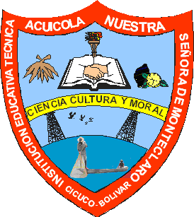
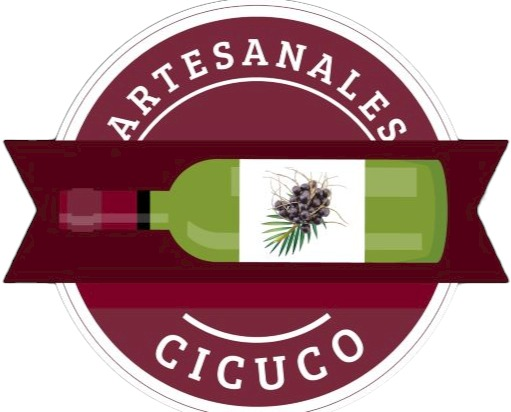

PRESENTACION
INTRODUCCION
1. PLANTEAMIENTO DEL PROBLEMA
1.1 DESCRIPCION DE LA REALIDAD PROBLEMÁTICA
1.2 ANTECEDENTES TEORICOS
2. MARCO TEORICO DE LA INVESTIGACION
2.1 MARCO HISTORICO
2.2 HISTORIA DEL VINO A NIVEL INTERNACIONAL
3. OBJETIVO, DELIMITACION Y JUSTIFICACION
3.1 OBJETIVOS GENERALES
3.2 OBJETIVOS ESPECIFICOS
3.3 DELIMITACION DE ESTUDIO
3.4 JUSTIFICACION E IMPORTANCIA DE ESTUDIO
4. MISION
5. VISION
6. HIPOTESIS, VARIABLE, DEFINICION OPERACIONAL
6.1 SUPUESTOS TEORICOS
7. METODOLOGIA, TECNICA E INSTRUMENTO
7.1 TECNICA E INSTRUMENTO DE RECOLECCION DE DATOS
DISEÑO MUESTRAL
9. PRESUPUESTO
CONCLUSION
 
VINO DE COROZO
Presentado por:
YOELIS MARTINEZ QUEVEDO
LUISANA BASTIDAS SORACA
CLARENA RODRIGUEZ GULLOSO
LUIS DAVID RUIZ AREVALO
JUAN DAVID GIL HERRERA
DANNA GAMARRA ARDILA
TÉCNICA EN AGROINDUSTRIA
WINSTON RAMOS NAIZIR / BENITO LUNA MARRUGO